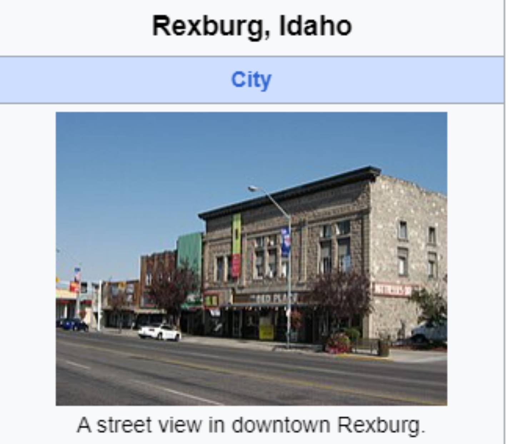

, Rexburg

Rexburg
About the Course
This section provides an overview of the web and computer programming course, highlighting its objectives and structure.
Web and Computer Programming Certificate
Contact Information
If you have any questions about the course, feel free to reach out via email or phone.